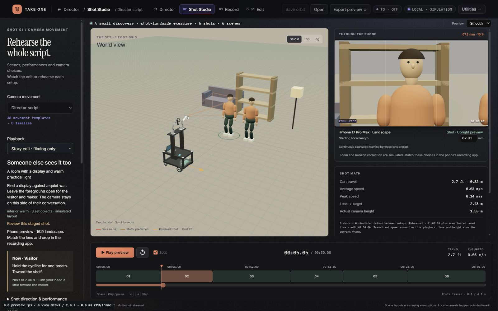
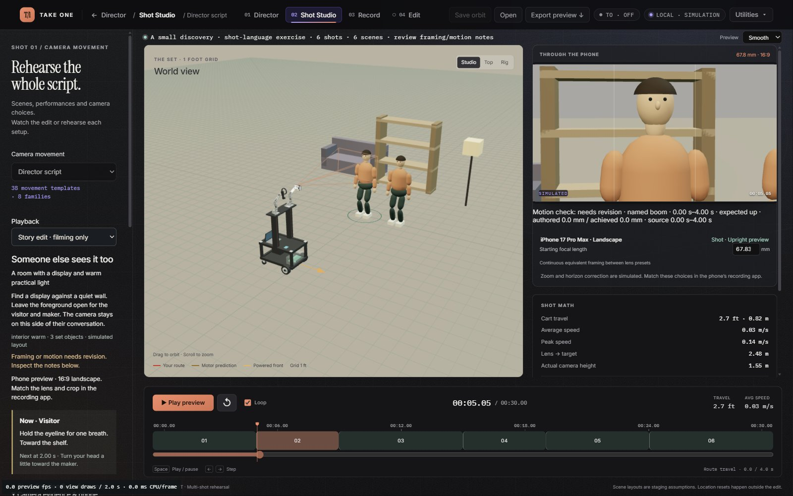

Slice 1 checkpoint · C:\TakeOne · 15 September 2026 · authored source, simulated output
The original six-shot exercise is unchanged. The same zero-rise shot now exposes its contradiction below the phone monitor and in the existing review and shooting guide.


A typed diagnostic in the existing review path compares achieved raw optical samples with authored boom direction. Explicit height keys override the preset only within their full-take intervals. Setup motion and unused source tails cannot satisfy the edit. Missing evidence is reported as unverified, never invented.
Existing capture-window boundaries retain real FK samples. The new check does not perform another IK solve, change calibration, or infer physical readiness. The 1 mm tolerance detects numerical no-ops; it is not a mechanical qualification or artistic threshold.
Program from the running simulator · Matching manifest · Fresh pre-change review · Owned source patch · Unsent skill/request digest check
57-test integration run · Final 20 motion tests · Five UI tests · Focused exit codes
Full verification is not certified green. Read the final verification disposition and the interrupted product-run record. Concurrent edits to actor/asset/phone code were preserved and are not claimed as this slice's work.
Headful Edge on the user's Intel Arc / Direct3D11 renderer was used. Focus emulation was enabled when the tab became hidden; this is not a software-rendered headless screenshot. GPU elapsed time was not measured.
Document digest: cae2b2f293d9b633615fd6b0ce9fcd02ea71fbbbb64075b2875dc72c31ccbcd8. Viewpoint: simulated processed phone view; motion measurements use raw achieved optical pose. Actor identity/attention, composition/occlusion and The First Turn candidate remain outside this checkpoint. No paid generation, hardware trial or training was performed.